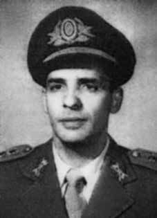

Joaquim
Pires
Cerveira
CIRCUNSTÂNCIAS DA MORTE
Documentos do Centro de Informações do Exterior (CIEX), do Ministério das Relações Exteriores, abertos à consulta pública pelo Arquivo Nacional no ano de 2012, lançaram luz sobre os desaparecimentos dos brasileiros Joaquim Pires Cerveira e João Batista Rita em Buenos Aires no dia 5 de dezembro de 1973, assim como sobre sua conexão com os sequestros do francês Jean Henri Raya Ribard e do argentino Antonio Luciano Pregoni, ocorridos no Brasil no final de novembro do mesmo ano. Há informações circunstanciais, que não foram possíveis ser confirmadas pela Comissão Nacional da Verdade (CNV), de que o desaparecimento de Joaquim Pires Cerveira, João Batista Rita, Juan Raya e Antonio Pregoni estaria relacionado também ao desaparecimento, em 21 de novembro de 1973, em Copacabana, no Rio de Janeiro, de Caiupy Alves de Castro, que teria mantido contatos com Cerveira no ano de 1971 no Chile. Segundo relato de Maria de Lourdes Pires Cerveira à CEMDP, ela conversou com o marido pela última vez em novembro de 1973, quando combinaram que a família se reuniria em Buenos Aires em janeiro de 1974. Joaquim deveria ter ligado para a casa em 10 de dezembro, data do aniversário da filha, mas não o fez. No dia 3 de janeiro a família recebeu um telefonema anônimo informando que Cerveira fora sequestrado na capital portenha quase um mês antes, mais precisamente no dia 5 de dezembro. Maria Lourdes viajou para Buenos Aires imediatamente, mas Joaquim já havia sido trazido para o Brasil junto com João Batista Rita. De acordo com Maria de Lourdes, em Buenos Aires, a imprensa divulgou o caso e identificou violação da soberania nacional no translado clandestino de Joaquim Cerveira e João Rita. A Associación Gremial de Abogados protestou e um habeas corpus foi impetrado pelo advogado portenho Roberto Sinigaglia que questionou os órgãos de segurança argentinos sobre os dois brasileiros sem obter sucesso. Mais tarde, o advogado viria a receber ameaças por telefone para que abandonasse o “caso dos brasileiros”.ix Após o golpe de Estado na Argentina, Roberto Juan Carmelo Sinagaglia, advogado da família de Cerveira, foi sequestrado e desapareceu em 11 de maio de 1976. O anfitrião de Joaquim Cerveira em Buenos Aires, de sobrenome Rossi, conta que no dia seguinte, 6 de dezembro de 1973, às 3 horas da madrugada, seis policiais argentinos que se identificaram como pertencentes a Polícia Federal e realizaram uma busca na residência de Cerveira à procura de armas e documentos. Retornaram às 11 horas da manhã acompanhados de um homem “que parecia chefiar” o grupo e, pela descrição, poderia ser Sérgio Paranhos Fleury – identificado por uma cicatriz na testa. Em meio a ameaças, eles mostraram uma foto de Cerveira aos outros residentes da casa e se retiraram da mesma após deixarem entender que Cerveira havia sido preso. À esposa de Cerveira chamou atenção a informação de que “em Empedrados, província de Corrientes, no alojamento dos refugiados do Chile, dia 2 de dezembro de 1973, estiveram nesse local dois homens, um deles oficial do Exército brasileiro, capitão Diniz Reis, que perguntava por Cerveira e sua localização, fato significativo já que três dias depois este foi sequestrado”.x Maria de Lourdes procurou a Embaixada Brasileira em Buenos Aires, mas não foi recebida pelo embaixador Azeredo da Silveira. Em 19 de fevereiro de 1974, Maria de Lourdes foi informada por Oldrich Hasselman, representante latino-americano do Alto Comissariado da ONU em Buenos Aires que os dois homens desaparecidos na Argentina, Cerveira e João Batista, foram vistos na noite de 12 para 13 de dezembro de 1973, quando chegavam numa ambulância fortemente guardada, na Polícia do Exército (DOI-CODI), na rua Barão de Mesquita, em lamentável estado físicoxi . A informação dada ao ACNUR foi repetida a Maria de Lourdes por um brasileiro aparentando uns 30 anos, baixo, moreno do tipo atarracado, cabelos crespos e bem curtos, que se apresentou como sendo a pessoa que fez a denúncia em Genebra, disse que nada tinha a ver com política e que já estava voltando para o Brasil por isso não diria seu nome, mas queria me contar que fizera a denúncia a mando de um oficial do Exército, colega de Cerveira, que estava presente quando o mesmo chegou à Polícia do Exército, e que o mesmo oficial deu as costas a Cerveira evitando que este o reconhecesse, deixou passar alguns dias e mandou-o à Genebra denunciar o ocorrido. xii Em informe interno do CIEX, datado de 14 de março de 1974, Alberto Conrado Avegno, agente do CIEX que usava, entre outros, o codinome de “Altair”, sugeriu que a argentina Alicia Eguren, militante da esquerda peronista, era o contato entre o ex-major brasileiro Joaquim Cerveira e o pequeno grupo de militantes revolucionários integrados pelo francês Jean Henri Raya, radicado na Argentina e conhecido como Juan Raya, e pelo argentino Antonio Pregoni. Na década de 1960, Pregoni havia integrado o grupo Tupamaros, do Uruguai. Joaquim Pires Cerveira, líder de um pequeno grupo conhecido como Frente de Libertação Nacional (FLN), encontrava-se na Argentina após haver deixado o Chile às vésperas do golpe contra Salvador Allende. Segundo documentos dos serviços de informações argentinos e brasileiros, Cerveira portava à época passaporte brasileiro emitido em nome de “Walter de Moura”. Os encontros em Buenos Aires, entre o grupo liderado pelo major Joaquim Pires Cerveira e o grupo de Juan Raya e Antonio Luciano Pregoni, foram confirmados em depoimento à CNV do argentino Julio Cesar Robles, realizado em 8 de abril de 2014 na cidade argentina de Río Ceballos, na província de Córdoba. Segundo Julio Robles, o primeiro desses encontros teria ocorrido na confeitaria Richmond, na rua Florida em Buenos Aires, poucas semanas após o golpe contra Salvador Allende no Chile. De acordo com Robles, Alicia Eguren teria promovido a aproximação entre os dois grupos de militantes, a fim de que os argentinos providenciassem assistência econômica aos brasileiros provenientes do Chile. Julio Robles, que participou de várias iniciativas de insurgência da resistência peronista na década de 1950 e 1960, informou à CNV que Cerveira esteve nesses encontros na companhia de outros dois brasileiros cujos nomes desconhece, mas que eles não aparentavam ter mais de trinta anos de idade à época. Robles confirmou à CNV que Juan Raya, Antonio Pregoni e outro argentino conhecido pelo apelido de “El Salteño” – que acredita ser Antonio Graciani – teriam viajado ao Brasil em meados de novembro de 1973, possivelmente na companhia de um dos brasileiros que integravam o grupo de Cerveira. Também estaria junto outro cidadão, de nacionalidade chilena. Memorando do Serviço de Inteligência da Prefectura Naval Argentina (órgão equivalente à Capitania dos Portos no Brasil), com data de 28 de novembro de 1973, disponibilizado à CNV pela Comisión Provincial de la Memoria de la Provincia de Buenos Aires, revela que as forças armadas e policiais da Argentina foram informadas pela Polícia Federal de Uruguaiana (RS) que Joaquim Pires Cerveira estava na Argentina à época e estaria realizando “contatos com organizações extremistas argentinas”. O documento do CIEX de 1974 informa que Juan Raya viajara ao Brasil em novembro de 1973 para realizar uma ação armada em conjunto com o grupo do ex-major Cerveira, que então contava com a participação de brasileiros integrantes da FLN e do Movimento Revolucionário Tiradentes (MRT). O alvo da suposta operação não é identificado no documento. Segundo o documento, Alberto Conrado (“Altair”) deveria ir ao Rio de Janeiro para investigar o que havia acontecido com Raya – identificado erroneamente no relatório pelo nome de “Juan Rays”. Em 14 de dezembro de 1973 por meio de informe do CIEX, o agente Alberto Conrado (“Altair”) relatou que estivera “várias vezes” com Cerveira no Chile. Conrado se refere à denúncia do sequestro de Joaquim Pires Cerveira e João Batista Rita em Buenos Aires e à busca realizada na casa de Cerveira por um grupo de policiais argentinos que tinha à frente um brasileiro, “dizendo-se da Interpol”. O agente do CIEX também indica que o “coronel Floriano” – coronel Floriano Aguilar Chagas, adido do Exército junto à Embaixada do Brasil em Buenos Aires à época – estaria vinculado tanto à operação de sequestro de Joaquim Pires Cerveira em Buenos Aires como à “penetração” no Brasil de um “comando argentino” de “peronistas de esquerda”.xiii Documento secreto do CIEX com o título “FAP. Elementos do Brasil” informa que Alicia Eguren buscava apurar “a situação dos três desaparecidos na Guanabara” e solicitou a „Johnson‟ para apurar o ocorrido. xiv Johnson era o agente do CIE Alberto Conrado Avegno, infiltrado nas organizações guerrilheiras, que afirma – no mesmo documento – ter sido o desaparecimento de Cerveira “uma operação mancomunada da polícia federal argentina e setor militar brasileiro em Buenos Aires”. xv Um relato descrito em mensagem secreta de número 43, de 26 de junho de 1974, pelo agente Alberto Conrado Avegno (“Altair”) confirma que Joaquim Pires Cerveira foi sequestrado. O agente afirma que um oficial de inteligência argentino, originalmente da Gendarmeria Nacional, que era seu contato e conhecia detalhes sobre o sequestro de Cerveira, como “quem atuou e as ligações da Polícia Federal [argentina] com a Embaixada Brasileira, assim como a ligação dessa Embaixada com a Polícia Federal [argentina]”. xvi O agente também relata que esse oficial conhecia profundamente o processo de militância argentino e tinha acesso às informações políticas da Polícia Federal e do SIDE, a Secretaria de Inteligência do Estado Argentino (Secretaría de Inteligencia Del Estado). Nas palavras de Conrado quem atuava na Argentina era “bastante plotado pelo SIDE” e, portanto, “sempre se terá boas informações dentro do sistema argentino”. xvii Joaquim Pires Cerveira foi registrado duas vezes nos arquivos da Dirección de Inteligencia de la Policía de la Provincia de Buenos Aires (DIPBA). Um registro foi feito com Referência nº. 16355, “Joaquin Pires Cerveira”, em 4 de dezembro de 1973, um dia antes de seu desaparecimento. xviii Imediatamente após o Servicio de Informaciones de la Policía de la Provincia de Buenos Aires (SIPBA) receber informações da entrada de Cerveira no país, por meio da Prefeitura Naval Argentina, foi iniciada uma investigação sobre o assunto, solicitando informações sobre o caso à SIDE (Secretaría de Inteligencia del Estado) à Delegação SIPBA de San Justo.xix Comunicado secreto, datado de 24 de junho de 1976, encontrado no Archivo Prefectura Naval Argentina Zona Atlántico Norte, pasta 113 (Parte 1, folhas 451-458) constitui uma lista de “pessoas procuradas e das quais se solicita a captura”. Nela consta, dentre outros, os nomes de Joaquim Pires Cerveira e João Belchior Marques Goulart. O comunicado é encaminhado por Oswaldo Benetito Páez, tenente-coronel G-3 do Comando Subz. 51. A lista é composta somente por nomes de brasileiros, alguns dos quais já haviam desaparecido em vias clandestinas. xx Após as denúncias feitas em 1974 por Don Paulo Evaristo Arns e a Comissão de Familiares de Mortos e Desaparecidos Políticos sobre 22 desaparecidos, o ministro da Justiça, Armando Falcão emitiu uma nota de 6 de fevereiro de 1975 apenas dizendo que João Batista Rita e Joaquim Cerveira haviam sido banidos do país.xxi Em julho de 1975, por meio de uma petição judicial, o advogado Miguel Radrizzani acusou o ex-ministro argentino José Lopez Rega de ser um dos principais chefes da organização Aliança Anticomunista Argentina, “Triple A” ou AAA, e denunciou a relação formal criada entre a Argentina e o Brasil para a repressão política. Assim, Miguel se recordava do sequestro e desaparecimento de Joaquim Pires Cerveira, que teria sido transferido da Argentina para o território brasileiro (notícias do Jornal da Tarde e Folha da Manhã, de 15 de julho de 1975).xxii No arquivo do antigo DOPS do Paraná, o nome do major Cerveira foi encontrado em uma gaveta que continha dezessete fichas com a identificação “falecidos”. A morte de Cerveira e de mais outros onze desaparecidos foi confirmada pelo general Adyr Fiúza de Castro, entrevistado anonimamente pelo jornalista Antônio Henrique Lago para o jornal Folha de São Paulo, em matéria publicada em 28 de janeiro de 1979. Adyr Fiúza de Castro foi criador e primeiro chefe do CIE (Centro de Informações do Exército), chefe do DOI-CODI do I Exército, comandante da Polícia Militar do Rio de Janeiro e, depois, da VI Região Militar.xxiii Segundo uma notícia do jornal La Razon de 14 de dezembro de 1973, encontrada no arquivo da Divisão de Investigações da Polícia de Buenos Aires (DIPBA), uma denúncia foi feita em uma coletiva de imprensa convocada pela Asociación Gremial de Abogados, o Peronismo de Base e os Centros Ibero-americanos para Emancipación Nacional sobre o desaparecimento de João Rita e Joaquim Cerveira. A notícia informava que Cerveira, identificado como „Walter de Souza‟, era major do exército brasileiro, estava exilado na Argentina e havia desaparecido. Foi relatado que um grupo de quatro pessoas, aparentemente pertencentes a organismos para-policiais, acompanhados de um brasileiro que se dizia da Interpol, tentaram localizá-lo em seu domicílio. A notícia sugere que o sequestro teria sido realizado por organismos parapoliciais argentinos e/ou brasileiros que teriam atuado de forma conjunta.xxiv Em depoimento à CNV, o ex-delegado Cláudio Guerra afirmou que o delegado Sérgio Paranhos Fleury teria sido o responsável pelo sequestro de Cerveira em Buenos Aires e também por seu traslado para o Brasil – informação que Guerra teria obtido do próprio Fleury. Guerra afirmou ainda que o corpo do major Joaquim Pires Cerveira lhe foi entregue pelo coronel Freddie Perdigão no Destacamento de Operações de Informações (DOI), à rua Barão de Mesquita, Rio de Janeiro, para incineração na usina Cambahyba, no município de Campos de Goytacazes, no Rio de Janeiro. Em depoimento à CNV em 26 de março de 2014, o coronel Paulo Malhães nada falou sobre o sequestro do major Cerveira em Buenos Aires, mas afirmou acreditar que o ex-militar brasileiro teria sido morto no DOI do Rio de Janeiro. Em 19 de fevereiro de 1974, poucos dias depois da entrevista do representante do Alto Comissariado das Nações Unidas, Oldrich Haselman, para os Refugiados com o diplomata brasileiro em Buenos Aires, o correspondente estrangeiro Patrick Keatley, do jornal The Guardian, de Londres, publicou matéria intitulada “Brazilian rebels tortured after being abducted”, na qual registrou testemunho dos suplícios sofridos por Joaquim Pires Cerveira e João Batista no DOI do I Exército, no Rio de Janeiro: Dois membros, líderes do movimento oposicionista clandestino brasileiro, que haviam procurado refúgio na Argentina, foram sequestrados em Buenos Aires e estão sendo torturados na prisão da rua Barão de Mesquita, no Rio de Janeiro, segundo informações. O relato foi dado ao The Guardian ontem à noite por outro refugiado político brasileiro, atualmente exilado na Bélgica, o qual viu os dois homens chegando à prisão em uma ambulância da polícia no dia 13 de janeiro. Ele diz que eles foram raptados por membros do “Esquadrão da Morte”, trajando roupas comuns da polícia, que esteve também ativa no Chile desde o golpe. Presumindo que o relato seja preciso − o refugiado foi capaz de dar expressiva corroboração e também referências pessoais − isto significa que o desaparecimento misterioso de Joaquim Pires Cerveira e João Batista Rita Pereira do seu lugar de exílio na Argentina, há dois meses, foi solucionado. […] A testemunha ocular que viu Cerveira e Rita no Rio de Janeiro na manhã de 13 de janeiro de 1974 faz um seguinte relato do aspecto dos dois brasileiros quando foram levados para a prisão; “Estavam amarrados juntos em posição fetal, os rostos inchados, mostrando vestígios de sangue fresco. Estavam em estado de choque obviamente extenuados. Foram levados para o que é conhecido como celas frigoríficas individuais. São câmaras de torturas. A temperatura interna pode ser reduzida a menos de quinze graus. O sistema nervoso do prisioneiro pode também ser afetado. Isto é feito por meio de um sistema de alto-falantes, que reproduz os gritos de pessoas sofrendo torturas.”
Documents from the Foreign Information Center (CIEX), of the Ministry of Foreign Affairs, opened for public consultation by the National Archives in 2012, shed light on the disappearances of Brazilians Joaquim Pires Cerveira and João Batista Rita in Buenos Aires on December 5, 1973, as well as on their connection with the kidnappings of Frenchman Jean Henri Raya Ribard and Argentinean Antonio Luciano Pregoni, which took place in Brazil at the end of November of the same year. There is circumstantial information, which was not possible to be confirmed by the National Truth Commission (CNV), that the disappearance of Joaquim Pires Cerveira, João Batista Rita, Juan Raya and Antonio Pregoni would also be related to the disappearance, on November 21, 1973, in Copacabana, Rio de Janeiro, of Caiupy Alves de Castro, who would have maintained contacts with Cerveira in 1971 in Chile. According to Maria de Lourdes Pires Cerveira's report to CEMDP, she spoke with her husband for the last time in November 1973, when they agreed that the family would meet in Buenos Aires in January 1974. Joaquim should have called the house on December 10, the date of his daughter's birthday, but he didn't. On January 3rd, the family received an anonymous call informing them that Cerveira had been kidnapped in the Buenos Aires capital almost a month earlier, more precisely on December 5th. Maria Lourdes traveled to Buenos Aires immediately, but Joaquim had already been brought to Brazil along with João Batista Rita. According to Maria de Lourdes, in Buenos Aires, the press publicized the case and identified a violation of national sovereignty in the clandestine transfer of Joaquim Cerveira and João Rita. The Associación Gremial de Abogados protested and a habeas corpus was filed by Buenos Aires lawyer Roberto Sinigaglia, who questioned Argentine security agencies about the two Brazilians without success. Later, the lawyer would receive threats over the phone to abandon the “Brazilian case”.ix After the coup d'état in Argentina, Roberto Juan Carmelo Sinagaglia, lawyer for Cerveira's family, was kidnapped and disappeared on May 11, 1976. Joaquim Cerveira's host in Buenos Aires, surnamed Rossi, says that the following day, December 6, 1973, at 3 a.m., six Argentine police officers who They identified themselves as belonging to the Federal Police and carried out a search of Cerveira's residence looking for weapons and documents. They returned at 11 am accompanied by a man “who seemed to lead” the group and, based on the description, could be Sérgio Paranhos Fleury – identified by a scar on his forehead. Amid threats, they showed a photo of Cerveira to the other residents of the house and left the house after letting it be known that Cerveira had been arrested. Cerveira's wife drew attention to the information that “in Empedrados, province of Corrientes, in the accommodation for refugees from Chile, on December 2, 1973, two men were there, one of them an officer from the Brazilian Army, Captain Diniz Reis, who was asking about Cerveira and his location, a significant fact since three days later he was kidnapped.” Silveira. On February 19, 1974, Maria de Lourdes was informed by Oldrich Hasselman, Latin American representative of the UN High Commissioner in Buenos Aires that the two men missing in Argentina, Cerveira and João Batista, were seen on the night of December 12 to 13, 1973, when they arrived in a heavily guarded ambulance, at the Army Police (DOI-CODI), on Barão de Mesquita street, in a lamentable physical condition. . The information given to the UNHCR was repeated to Maria de Lourdes by a Brazilian man who appeared to be around 30 years old, short, with a stocky dark complexion, curly and very short hair, who introduced himself as the person who made the complaint in Geneva, said that he had nothing to do with politics and that he was already returning to Brazil so he would not say his name, but wanted to tell me that he had made the complaint at the behest of an Army officer, a colleague of Cerveira, who was present when he arrived at the Police. of the Army, and that the same officer turned his back on Cerveira, preventing him from recognizing him, let a few days pass and sent him to Geneva to report what had happened. xii In an internal CIEX report, dated March 14, 1974, Alberto Conrado Avegno, a CIEX agent who used, among others, the code name “Altair”, suggested that the Argentine Alicia Eguren, a member of the Peronist left, was the contact between the former Brazilian major Joaquim Cerveira and the small group of revolutionary militants made up of the Frenchman Jean Henri Raya, based in Argentina and known as Juan Raya, and by Argentine Antonio Pregoni. In the 1960s, Pregoni had joined the Tupamaros group, from Uruguay. Joaquim Pires Cerveira, leader of a small group known as the National Liberation Front (FLN), was in Argentina after leaving Chile on the eve of the coup against Salvador Allende. According to documents from Argentine and Brazilian intelligence services, Cerveira at the time carried a Brazilian passport issued in the name of “Walter de Moura”. The meetings in Buenos Aires, between the group led by Major Joaquim Pires Cerveira and the group of Juan Raya and Antonio Luciano Pregoni, were confirmed in a statement to the CNV by Argentine Julio Cesar Robles, held on April 8, 2014 in the Argentine city of Río Ceballos, in the province of Córdoba. According to Julio Robles, the first of these meetings took place at the Richmond confectionery shop, on Florida Street in Buenos Aires, a few weeks after the coup against Salvador Allende in Chile. According to Robles, Alicia Eguren would have promoted rapprochement between the two groups of militants, so that the Argentines would provide economic assistance to Brazilians coming from Chile. Julio Robles, who participated in several insurgency initiatives of the Peronist resistance in the 1950s and 1960s, informed the CNV that Cerveira was at these meetings in the company of two other Brazilians whose names he does not know, but who did not appear to be over thirty years of age at the time. Robles confirmed to the CNV that Juan Raya, Antonio Pregoni and another Argentine known by the nickname “El Salteño” – who he believes to be Antonio Graciani – had traveled to Brazil in mid-November 1973, possibly in the company of one of the Brazilians who were part of Cerveira's group. Another citizen, of Chilean nationality, would also be present. Memorandum from the Intelligence Service of the Argentine Naval Prefecture (body equivalent to the Port Authority in Brazil), dated November 28, 1973, made available to the CNV by the Comisión Provincial de la Memoria de la Provincia de Buenos Aires, reveals that the Argentine armed forces and police were informed by the Federal Police of Uruguaiana (RS) that Joaquim Pires Cerveira was in Argentina at the time and was making “contacts with extremist organizations Argentines”. The CIEX document from 1974 states that Juan Raya had traveled to Brazil in November 1973 to carry out an armed action together with the group of former major Cerveira, which at the time included the participation of Brazilian members of the FLN and the Tiradentes Revolutionary Movement (MRT). The target of the alleged operation is not identified in the document. According to the document, Alberto Conrado (“Altair”) was supposed to go to Rio de Janeiro to investigate what had happened to Raya – wrongly identified in the report by the name “Juan Rays”. On December 14, 1973, through a CIEX report, agent Alberto Conrado (“Altair”) reported that he had been “several times” with Cerveira in Chile. Conrado refers to the report of the kidnapping of Joaquim Pires Cerveira and João Batista Rita in Buenos Aires and the search carried out at Cerveira's house by a group of Argentine police officers led by a Brazilian, “claiming to be from Interpol”. The CIEX agent also indicates that “Colonel Floriano” – Colonel Floriano Aguilar Chagas, Army attaché at the Brazilian Embassy in Buenos Aires at the time – would be linked both to the kidnapping operation of Joaquim Pires Cerveira in Buenos Aires and to the “penetration” in Brazil of an “Argentine command” of “left-wing Peronists”. Eguren sought to investigate “the situation of the three missing people in Guanabara” and asked “Johnson” to investigate what had happened. June 26, 1974, by agent Alberto Conrado Avegno (“Altair”) confirms that Joaquim Pires Cerveira was kidnapped. The agent states that an Argentine intelligence officer, originally from the National Gendarmerie, who was his contact and knew details about Cerveira's kidnapping, such as “who acted and the connections between the [Argentine] Federal Police and the Brazilian Embassy, as well as that Embassy's connection with the [Argentine] Federal Police xvi”. The agent also reports that this officer had in-depth knowledge of the Argentine militancy process and had access to political information from the Federal Police and SIDE, the Argentine State Intelligence Secretariat (Secretaría de Inteligencia Del Estado). of the Police of the Province of Buenos Aires (DIPBA). A record was made with Reference No. 16355, “Joaquin Pires Cerveira”, on December 4, 1973, one day before his disappearance. investigation into the matter, requesting information about the case from SIDE (Secretaría de Inteligencia del Estado) to the SIPBA Delegation of San Justo. It includes, among others, the names of Joaquim Pires Cerveira and João Belchior Marques Goulart. The statement was sent by Oswaldo Benetito Páez, lieutenant colonel G-3 of Subz Command 51. The list is made up only of names of Brazilians, some of whom had already disappeared in clandestine routes. Disappeared Politicians about 22 disappeared, the Minister of Justice, Armando Falcão issued a note on February 6, 1975 simply saying that João Batista Rita and Joaquim Cerveira had been banned from the country. or AAA, and denounced the formal relationship created between Argentina and Brazil for political repression. Thus, Miguel remembered the kidnapping and disappearance of Joaquim Pires Cerveira, who had been transferred from Argentina to Brazilian territory (news from Jornal da Tarde and Folha da Manhã, July 15, 1975). The death of Cerveira and eleven other missing persons was confirmed by General Adyr Fiúza de Castro, interviewed anonymously by journalist Antônio Henrique Lago for the newspaper Folha de São Paulo, in an article published on January 28, 1979. Adyr Fiúza de Castro was the creator and first head of the CIE (Army Information Center), head of the DOI-CODI of the First Army, commander of the Military Police of Rio de Janeiro and, later, of the VI Region Militar.xxiii According to a report from the newspaper La Razon dated December 14, 1973, found in the archive of the Buenos Aires Police Investigations Division (DIPBA), a complaint was made at a press conference called by the Asociación Gremial de Abogados, Peronismo de Base and Centros Ibero-americano para Emancipación Nacional about the disappearance of João Rita and Joaquim Cerveira. The news reported that Cerveira, identified as 'Walter de Souza', was a major in the Brazilian army, was in exile in Argentina and had disappeared. It was reported that a group of four people, apparently belonging to para-police organizations, accompanied by a Brazilian who claimed to be from Interpol, tried to locate him at his home. The news suggests that the kidnapping had been carried out by Argentine and/or Brazilian para-police organizations who had acted jointly.xxiv In In his statement to the CNV, former delegate Cláudio Guerra stated that delegate Sérgio Paranhos Fleury was responsible for Cerveira's kidnapping in Buenos Aires and also for his transfer to Brazil – information that Guerra had obtained from Fleury himself. Guerra also stated that the body of Major Joaquim Pires Cerveira was handed over to him by Colonel Freddie Perdigão at the Information Operations Detachment (DOI), on Rua Barão de Mesquita, Rio de Janeiro. for incineration at the Cambahyba plant, in the municipality of Campos de Goytacazes, in Rio de Janeiro. In a statement to the CNV on March 26, 2014, Colonel Paulo Malhães said nothing about the kidnapping of Major Cerveira in Buenos Aires, but stated that he believed that the former Brazilian soldier had been killed at the DOI in Rio de Janeiro on February 19, 1974, a few days after the interview with the representative of the High Commissioner of Nations. United, Oldrich Haselman, for Refugees with the Brazilian diplomat in Buenos Aires, foreign correspondent Patrick Keatley, from the newspaper The Guardian, in London, published an article entitled “Brazilian rebels tortured after being abducted”, in which he recorded testimony of the tortures suffered by Joaquim Pires Cerveira and João Batista in the DOI of the I Army, in Rio de Janeiro: Two members, leaders of the Brazilian clandestine opposition movement, who had sought refuge in Argentina, were kidnapped in Buenos Aires and are being tortured in the prison on Rua Barão de Mesquita, in Rio de Janeiro, according to reports. The report was given to The Guardian last night by another Brazilian political refugee, currently in exile in Belgium, who saw the two men arriving at the prison in a police ambulance on January 13. He says that they were kidnapped by members of the “Death Squad”, dressed in ordinary police clothing, which has also been active in Chile since the coup. precisely − the refugee was able to provide significant corroboration and also personal references − this means that the mysterious disappearance of Joaquim Pires Cerveira and João Batista Rita Pereira from their place of exile in Argentina, two months ago, has been solved. […] The eyewitness who saw Cerveira and Rita in Rio de Janeiro on the morning of January 13, 1974 gives the following account of the appearance of the two Brazilians when they were taken to prison; "They were tied together in the fetal position, their faces swollen, showing traces of fresh blood. They were in a state of shock, obviously exhausted. They were taken to what are known as individual cold cells. These are torture chambers. The temperature inside can be reduced to less than fifteen degrees. The prisoner's nervous system can also be affected. This is done through a loudspeaker system, which reproduces the screams of people undergoing torture."
Documentos del Centro de Información Exterior (CIEX), del Ministerio de Relaciones Exteriores, abiertos a consulta pública por el Archivo Nacional en 2012, arrojan luz sobre las desapariciones de los brasileños Joaquim Pires Cerveira y João Batista Rita en Buenos Aires el 5 de diciembre de 1973, así como sobre su conexión con los secuestros del francés Jean Henri Raya Ribard y del argentino Antonio Luciano Pregoni, ocurridos en Brasil a finales de noviembre de el mismo año. Hay información circunstancial, que no pudo ser confirmada por la Comisión Nacional de la Verdad (CNV), de que la desaparición de Joaquim Pires Cerveira, João Batista Rita, Juan Raya y Antonio Pregoni también estaría relacionada con la desaparición, el 21 de noviembre de 1973, en Copacabana, Río de Janeiro, de Caiupy Alves de Castro, quien habría mantenido contactos con Cerveira en 1971 en Chile. Según el informe de María de Lourdes Pires Cerveira al CEMDP, habló con su marido por última vez en noviembre de 1973, cuando acordaron que la familia se reuniría en Buenos Aires en enero de 1974. Joaquim debería haber llamado a la casa el 10 de diciembre, fecha del cumpleaños de su hija, pero no lo hizo. El 3 de enero, la familia recibió una llamada anónima informándoles que Cerveira había sido secuestrada en la capital bonaerense casi un mes antes, más precisamente el 5 de diciembre. María Lourdes viajó inmediatamente a Buenos Aires, pero Joaquim ya había sido traído a Brasil junto con João Batista Rita. Según María de Lourdes, en Buenos Aires la prensa dio a conocer el caso y identificó una violación de la soberanía nacional en el traslado clandestino de Joaquim Cerveira y João Rita. La Asociación Gremial de Abogados protestó y el abogado bonaerense Roberto Sinigaglia interpuso un habeas corpus, quien interrogó sin éxito a los organismos de seguridad argentinos sobre los dos brasileños. Posteriormente, el abogado recibiría amenazas telefónicas de abandonar el “caso Brasil”.ix Luego del golpe de Estado en Argentina, Roberto Juan Carmelo Sinagaglia, abogado de la familia de Cerveira, fue secuestrado y desaparecido el 11 de mayo de 1976. El anfitrión de Joaquim Cerveira en Buenos Aires, de apellido Rossi, dice que al día siguiente, 6 de diciembre de 1973, a las 3 de la madrugada, seis policías argentinos se identificaron. como perteneciente a la Policía Federal y realizó un registro en la residencia de Cerveira en busca de armas y documentos. Regresaron a las 11 de la mañana acompañados de un hombre “que parecía liderar” el grupo y, según la descripción, podría ser Sérgio Paranhos Fleury, identificado por una cicatriz en la frente. En medio de amenazas, mostraron una foto de Cerveira a los demás vecinos de la casa y abandonaron la casa tras informar que Cerveira había sido detenido. La esposa de Cerveira llamó la atención sobre la información de que “en Empedrados, provincia de Corrientes, en el alojamiento para refugiados de Chile, el 2 de diciembre de 1973, se encontraban dos hombres, uno de ellos un oficial del Ejército brasileño, el capitán Diniz Reis, quien preguntaba por Cerveira y su ubicación, hecho significativo ya que tres días después fue secuestrado”. Silveira. El 19 de febrero de 1974, María de Lourdes fue informada por Oldrich Hasselman, representante latinoamericano del Alto Comisionado de la ONU en Buenos Aires, que los dos desaparecidos en Argentina, Cerveira y João Batista, fueron vistos la noche del 12 al 13 de diciembre de 1973, cuando llegaron en una ambulancia fuertemente custodiada, a la Policía Militar (DOI-CODI), en la calle Barão de Mesquita, en lamentable estado físico. . La información dada a ACNUR fue repetida a María de Lourdes por un hombre brasileño que aparentaba unos 30 años, de baja estatura, moreno y fornido, rizado y con el pelo muy corto, que se presentó como la persona que había hecho la denuncia en Ginebra, dijo que no tenía nada que ver con la política y que ya regresaba a Brasil por lo que no quiso decir su nombre, pero quería decirme que había hecho la denuncia a instancias de un oficial del ejército, colega de Cerveira, que estaba presente. cuando llegó a la Policía. del Ejército, y que el mismo oficial le dio la espalda a Cerveira, impidiéndole reconocerlo, dejó pasar unos días y lo envió a Ginebra a informar de lo sucedido. xii En un informe interno del CIEX, fechado el 14 de marzo de 1974, Alberto Conrado Avegno, agente del CIEX que utilizaba, entre otros, el nombre clave “Altair”, sugirió que la argentina Alicia Eguren, miembro de la izquierda peronista, era el contacto entre el ex mayor brasileño Joaquim Cerveira y el pequeño grupo de militantes revolucionarios integrado por el francés Jean Henri Raya, radicado en Argentina y conocido como Juan Raya, y por el argentino Antonio Pregoni. En los años 1960, Pregoni se había integrado al grupo Tupamaros, de Uruguay. Joaquim Pires Cerveira, líder de un pequeño grupo conocido como Frente de Liberación Nacional (FLN), se encontraba en Argentina después de abandonar Chile en vísperas del golpe contra Salvador Allende. Según documentos de los servicios de inteligencia argentinos y brasileños, Cerveira portaba entonces un pasaporte brasileño expedido a nombre de “Walter de Moura”. Las reuniones en Buenos Aires, entre el grupo liderado por el mayor Joaquim Pires Cerveira y el grupo de Juan Raya y Antonio Luciano Pregoni, fueron confirmadas en una declaración a la CNV del argentino Julio César Robles, realizada el 8 de abril de 2014 en la ciudad argentina de Río Ceballos, en la provincia de Córdoba. Según Julio Robles, el primero de estos encuentros tuvo lugar en la confitería Richmond, de la calle Florida de Buenos Aires, pocas semanas después del golpe de Estado contra Salvador Allende en Chile. Según Robles, Alicia Eguren habría promovido un acercamiento entre ambos grupos de militantes, para que los argentinos brindaran ayuda económica a los brasileños provenientes de Chile. Julio Robles, que participó en varias iniciativas insurgentes de la resistencia peronista en las décadas de 1950 y 1960, informó a la CNV que Cerveira estaba en esas reuniones en compañía de otros dos brasileños cuyos nombres desconoce, pero que no parecían tener más de treinta años en ese momento. Robles confirmó a la CNV que Juan Raya, Antonio Pregoni y otro argentino conocido con el sobrenombre de “El Salteño” -que cree ser Antonio Graciani- habían viajado a Brasil a mediados de noviembre de 1973, posiblemente en compañía de uno de los brasileños que formaban parte del grupo de Cerveira. También estaría presente otro ciudadano, de nacionalidad chilena. Memorándum del Servicio de Inteligencia de la Prefectura Naval Argentina (organismo equivalente a la Autoridad Portuaria en Brasil), de fecha 28 de noviembre de 1973, puesto a disposición de la CNV por la Comisión Provincial de la Memoria de la Provincia de Buenos Aires, revela que las fuerzas armadas y policiales argentinas fueron informadas por la Policía Federal de Uruguaiana (RS) que Joaquim Pires Cerveira se encontraba en ese momento en Argentina y estaba haciendo “contactos con organizaciones extremistas argentinas”. El documento del CIEX de 1974 afirma que Juan Raya había viajado a Brasil en noviembre de 1973 para realizar una acción armada junto al grupo del ex mayor Cerveira, que en ese momento contaba con la participación de miembros brasileños del FLN y del Movimiento Revolucionario Tiradentes (MRT). El objetivo de la supuesta operación no está identificado en el documento. Según el documento, Alberto Conrado (“Altair”) debía viajar a Río de Janeiro para investigar lo sucedido con Raya, erróneamente identificada en el informe con el nombre de “Juan Rays”. El 14 de diciembre de 1973, a través de un informe del CIEX, el agente Alberto Conrado (“Altair”) informó que había estado “varias veces” con Cerveira en Chile. Conrado se refiere a la denuncia del secuestro de Joaquim Pires Cerveira y João Batista Rita en Buenos Aires y al allanamiento realizado en la casa de Cerveira por un grupo de policías argentinos encabezados por un brasileño, “que decían ser de Interpol”. El agente del CIEX también indica que el “coronel Floriano” –coronel Floriano Aguilar Chagas, entonces agregado del Ejército en la embajada de Brasil en Buenos Aires– estaría vinculado tanto con la operación de secuestro de Joaquim Pires Cerveira en Buenos Aires como con la “penetración” en Brasil de un “comando argentino” de “peronistas de izquierda”. Eguren buscó investigar “la situación de los tres desaparecidos en Guanabara” y pidió a “Johnson” que investigara lo sucedido. 26 de junio de 1974, por el agente Alberto Conrado Avegno (“Altair”) confirma que Joaquim Pires Cerveira fue secuestrado. El agente afirma que un oficial de inteligencia argentino, originario de Gendarmería Nacional, que era su contacto y conocía detalles sobre el secuestro de Cerveira, tales como “quién actuó y las conexiones entre la Policía Federal [Argentina] y la Embajada de Brasil, así como la conexión de esa Embajada con la Policía Federal [Argentina] xvi”. El agente también informa que este oficial tenía un conocimiento profundo del proceso de militancia argentina y tuvo acceso a información política de la Policía Federal y de la SIDE, la Secretaría de Inteligencia Del Estado de Argentina. de la Policía de la Provincia de Buenos Aires (DIPBA). Se realizó acta con Referencia No. 16355, “Joaquin Pires Cerveira”, el 4 de diciembre de 1973, un día antes de su desaparición. investigación del asunto, solicitando información sobre el caso a la SIDE (Secretaría de Inteligencia del Estado) a la Delegación del SIPBA en San Justo. Incluye, entre otros, los nombres de Joaquim Pires Cerveira y João Belchior Marques Goulart. El comunicado fue enviado por Oswaldo Benetito Páez, teniente coronel G-3 del Comando Subz 51. La lista está compuesta únicamente por nombres de brasileños, algunos de los cuales ya habían desaparecido en rutas clandestinas. Políticos desaparecidos Alrededor de 22 desaparecidos, el Ministro de Justicia, Armando Falcão, emitió una nota el 6 de febrero de 1975 diciendo simplemente que João Batista Rita y Joaquim Cerveira habían sido expulsados del país. o AAA, y denunció la relación formal creada entre Argentina y Brasil por represión política. Así, Miguel recordó el secuestro y desaparición de Joaquim Pires Cerveira, quien había sido trasladado de Argentina a territorio brasileño (noticia del Jornal da Tarde y Folha da Manhã, 15 de julio de 1975). La muerte de Cerveira y de otros once desaparecidos fue confirmada por el general Adyr Fiúza de Castro, entrevistado anónimamente por el periodista Antônio Henrique Lago para el diario Folha de São Paulo, en un artículo publicado el 28 de enero de 1979. Adyr Fiúza de Castro fue el creador y primer jefe del CIE (Centro de Información del Ejército), jefe del DOI-CODI del Primer Ejército, comandante de la Policía Militar de Río de Janeiro y, posteriormente, de la VI Región. Militar.xxiii Según un informe del diario La Razón del 14 de diciembre de 1973, encontrado en el archivo de la División de Investigaciones de la Policía Bonaerense (DIPBA), en una rueda de prensa convocada por la Asociación Gremial de Abogados, Peronismo de Base y Centros Iberoamericanos para Emancipación Nacional se denunció la desaparición de João Rita y Joaquim Cerveira. La noticia informó que Cerveira, identificado como 'Walter de Souza', era mayor del ejército brasileño, se encontraba exiliado en Argentina y había desaparecido. Se informó que un grupo de cuatro personas, aparentemente pertenecientes a organizaciones parapoliciales, acompañados por un brasileño que dijo ser de Interpol, intentaron localizarlo en su domicilio. La noticia sugiere que el secuestro habría sido llevado a cabo por organizaciones parapoliciales argentinas y/o brasileñas que habían actuado conjuntamente.xxiv En su declaración ante la CNV, el ex delegado Cláudio Guerra afirmó que el delegado Sérgio Paranhos Fleury era responsable del secuestro de Cerveira en Buenos Aires y también de su traslado a Brasil – información que Guerra había obtenido del propio Fleury. Guerra también afirmó que el cuerpo del mayor Joaquim Pires Cerveira le fue entregado por el coronel Freddie Perdigão en el Destacamento de Operaciones de Información (DOI), en la Rua Barão de Mesquita, en Río de Janeiro. para incineración en la planta de Cambahyba, en el municipio de Campos de Goytacazes, en Río de Janeiro. En una declaración a la CNV del 26 de marzo de 2014, el coronel Paulo Malhães no dijo nada sobre el secuestro del mayor Cerveira en Buenos Aires, pero afirmó que creía que el ex soldado brasileño había sido asesinado en el DOI de Río de Janeiro el 19 de febrero de 1974, pocos días después de la entrevista con el representante del Alto Comisionado de las Naciones. Unidos, Oldrich Haselman, por los Refugiados con el diplomático brasileño en Buenos Aires, el corresponsal extranjero Patrick Keatley, del diario The Guardian, de Londres, publicó un artículo titulado “Rebeldes brasileños torturados después de ser secuestrados”, en el que recoge testimonios de las torturas sufridas por Joaquim Pires Cerveira y João Batista en el DOI del I Ejército, en Río de Janeiro: Dos miembros, líderes del movimiento clandestino de oposición brasileño, que habían buscado refugio en Argentina, fueron secuestrados en Buenos Aires y torturados en la prisión de Rua Barão de Mesquita, en Río de Janeiro, según informes. El informe fue entregado a The Guardian anoche por otro refugiado político brasileño, actualmente exiliado en Bélgica, que vio a los dos hombres llegar a la prisión en una ambulancia policial el 13 de enero. Dice que fueron secuestrados por miembros del “Escuadrón de la Muerte”, vestidos con ropa policial normal, que también ha estado activo en Chile desde el golpe. Precisamente – el refugiado supo aportar importantes corroboraciones y también referencias personales – esto significa que la misteriosa desaparición de Joaquim Pires Cerveira y João Batista Rita Pereira de su lugar de exilio en Argentina, hace dos meses, ha sido esclarecida. […] El testigo que vio a Cerveira y Rita en Río de Janeiro en la mañana del 13 de enero de 1974 da el siguiente relato del aspecto de los dos brasileños cuando fueron llevados a prisión; "Los ataron juntos en posición fetal, con las caras hinchadas y con rastros de sangre fresca. Estaban en estado de shock, claramente agotados. Los llevaron a lo que se conoce como celdas frías individuales. Son cámaras de tortura. La temperatura en el interior se puede reducir a menos de quince grados. El sistema nervioso del prisionero también puede verse afectado. Esto se hace a través de un sistema de altavoces que reproduce los gritos de las personas que están siendo torturadas".